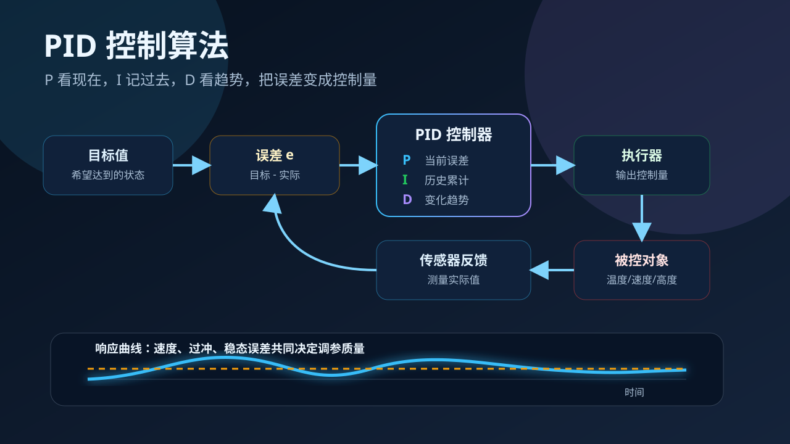

自动驾驶稳住车速、无人机保持高度、恒温箱控制温度，都离不开一个核心问题：系统偏离目标时，怎样又快又稳地拉回来？

你现在是一名调试温控箱的工程师。And：你已经会看目标值和实际值。But：只要加热器开大一点，温度就会冲过头；开小一点，又迟迟达不到目标。Therefore：我们需要一种能根据误差自动调节力度的算法。
选择或输入后，本课会围绕你的问题展开。
先判断你对反馈控制的直觉。答错没关系，错因会告诉你该重点补哪里。
1. 控制系统中的“误差”通常指什么？
2. 如果只按当前误差大小用力，最像 PID 中哪一项？
3. 系统一直差一点到不了目标，通常需要哪一项帮助消除长期偏差？
PID 不是神秘公式，而是一种把误差转换成控制量的方法。系统先测量实际值，再和目标值比较，得到误差，控制器根据误差决定执行器该用多大力。
易错点1：误差不是“系统坏了”，而是“目标与实际的差”。如果把误差理解成故障，就会误以为误差越小控制器越没事做；实际上误差是控制器工作的输入。
看当前误差。误差越大，出力越大。优点是反应快；风险是 Kp 太大容易过冲和震荡。
看历史误差的累计。长期差一点到不了目标时，I 会继续“补力”。风险是 Ki 太大导致积分饱和。
看误差变化速度。系统冲得太快时，D 像提前刹车。风险是 Kd 太大容易放大传感器噪声。
易错点2：P、I、D 不是三种互相替代的算法，而是三种信息来源：现在、过去、趋势。把它们当成“谁最强”来比较，会搞混调参目标。
真实场景应用：假设你在调试恒温箱。拖动 Kp、Ki、Kd，观察实际温度曲线如何接近目标。目标是“快、稳、少过冲”。
易错点3：调参不是把 Kp、Ki、Kd 全部拉满。参数越大通常越“猛”，但也越容易震荡、过冲或放大噪声。工程上追求的是稳定与响应速度的平衡。
如果温度曲线最后总是比目标低 2°C，主要应该考虑增加哪一项？
这段短视频用于帮助你把响应曲线与调参目标联系起来：速度、稳定性、过冲和稳态误差需要同时观察。
1. PID 中 D 项主要关注什么？
2. 系统过冲很大且来回震荡，最可能的原因是什么？
3. 想消除长期稳态误差，通常需要哪一项？
4. 下列哪句话最能概括 PID？
把 P、I、D 与作用配对：哪一项最像“提前刹车”？
某恒温箱到达目标很慢，但几乎不过冲。你会先调整哪个参数？为什么？
设计一个无人机定高 PID 调参方案：怎样兼顾快速上升、少过冲、抗风扰？
本节点的前置、后续和同域知识由标准知识图谱模块自动渲染。